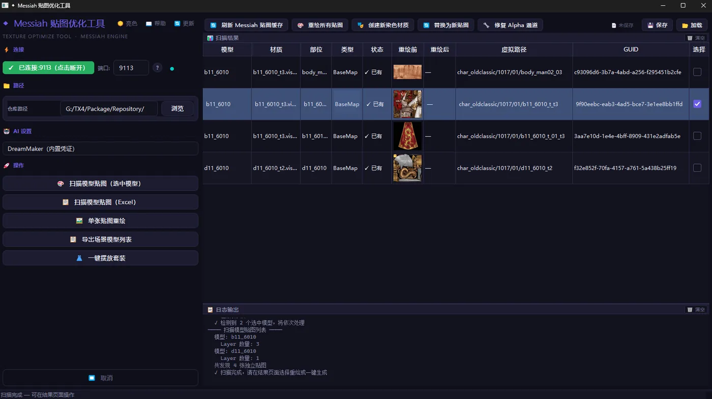
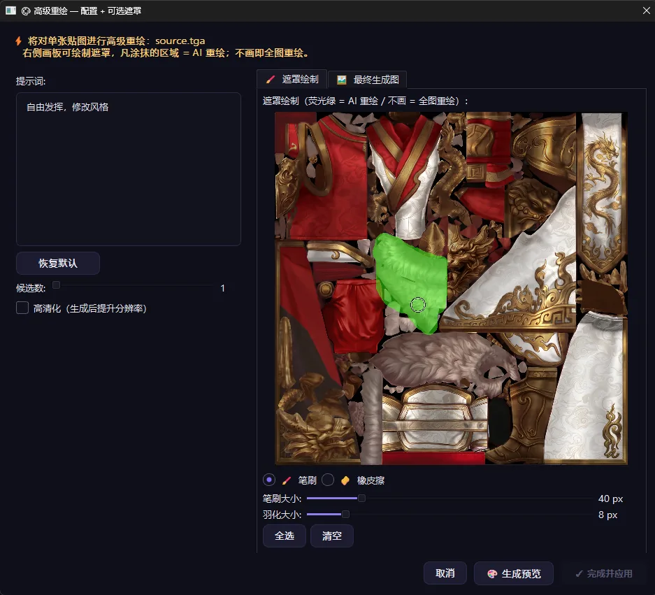
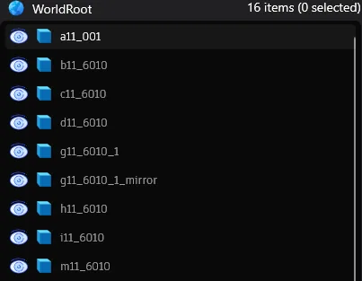
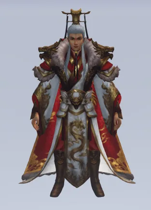
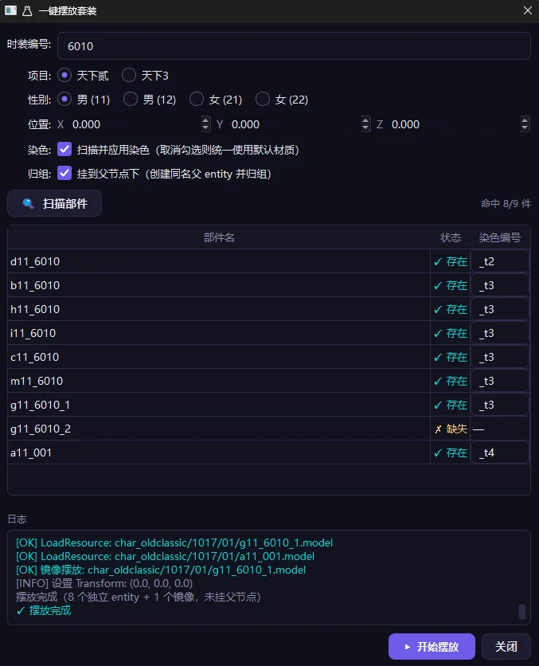
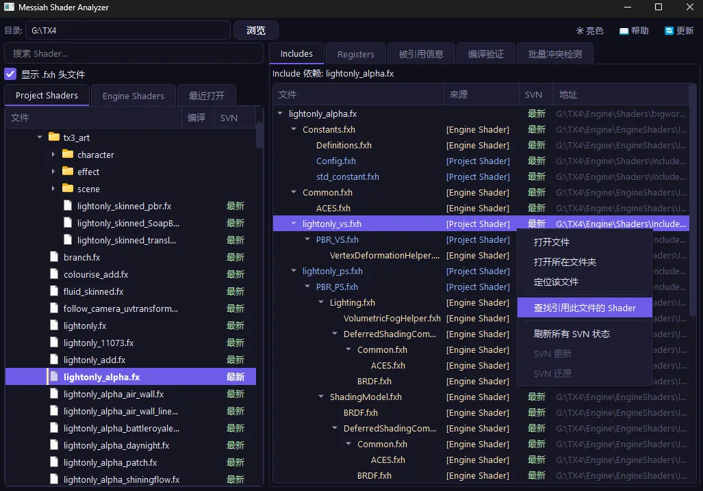
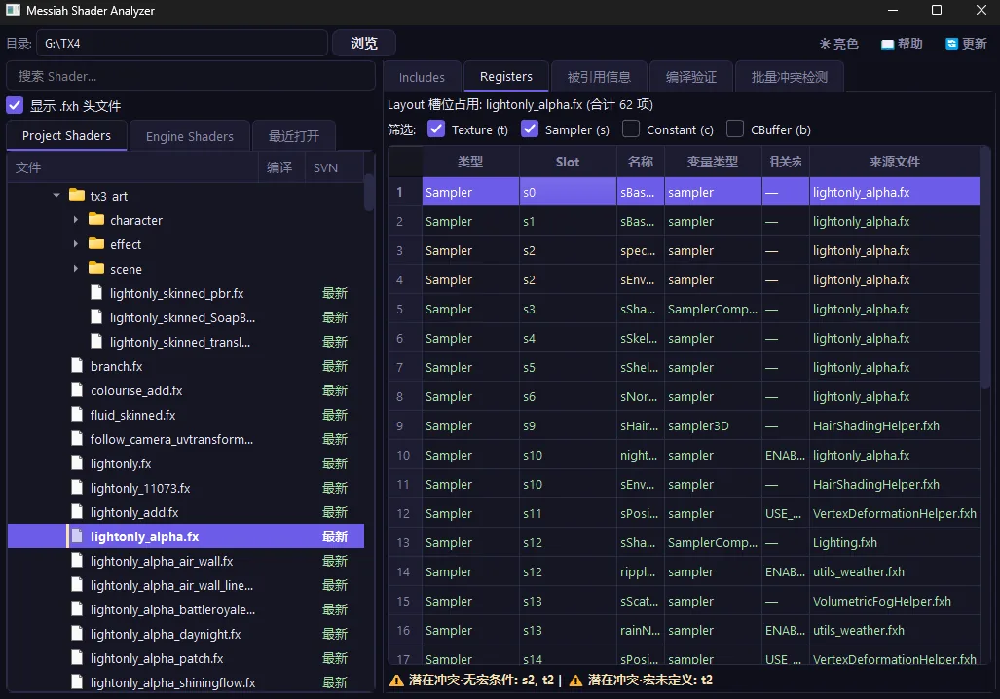
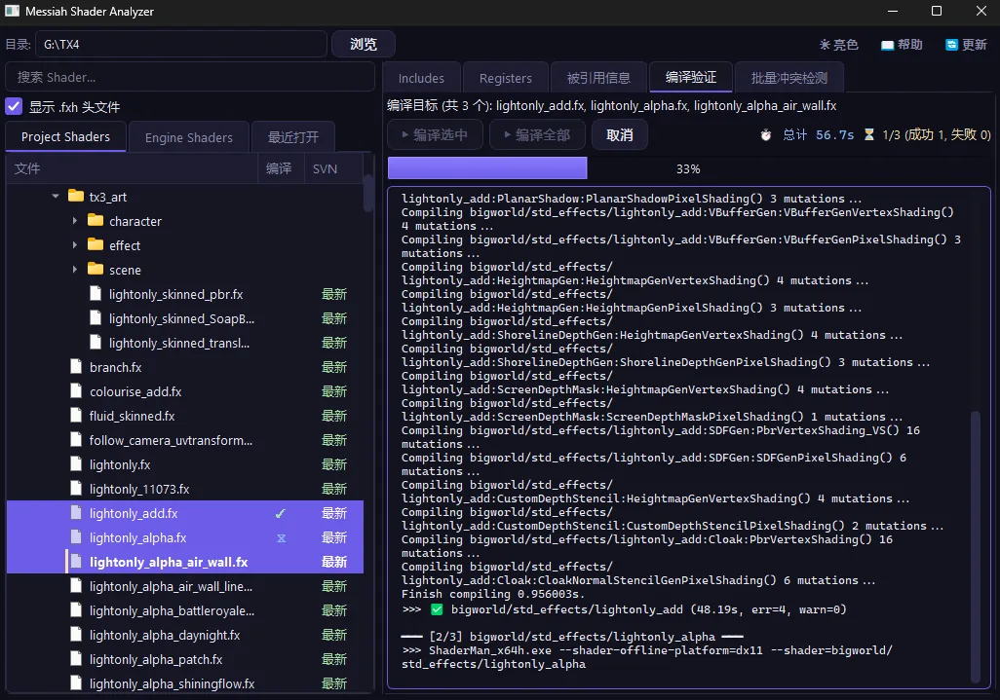
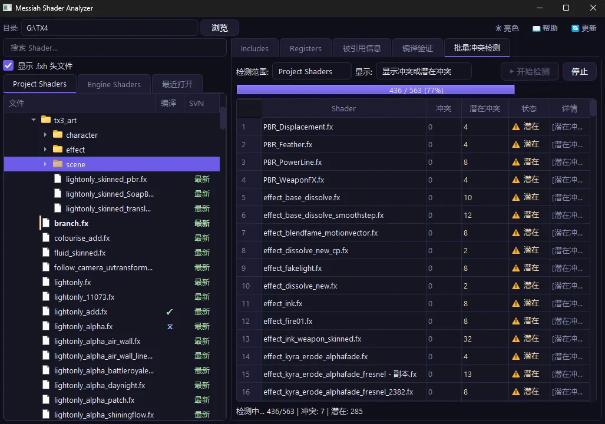

美术工具开发
围绕贴图制作与 Shader 管理自研的引擎 / 美术工具，提升美术团队的工作效率与规范性。
Messiah 贴图 AI 重绘优化工具
贴图 AI 重绘：借助 AI 自动重绘并优化贴图质量，减少人工重复劳动。一键摆放套装：将套装相关贴图资源一键整理、摆放到规范位置。






Shader 分析管理工具
头文件引用分析：分析 Shader 的头文件引用关系，帮助梳理依赖。寄存器冲突分析：检测 Shader 寄存器冲突，支持批量检测。Shader 批量编译：批量编译 Shader，便于快速验证与排查。



